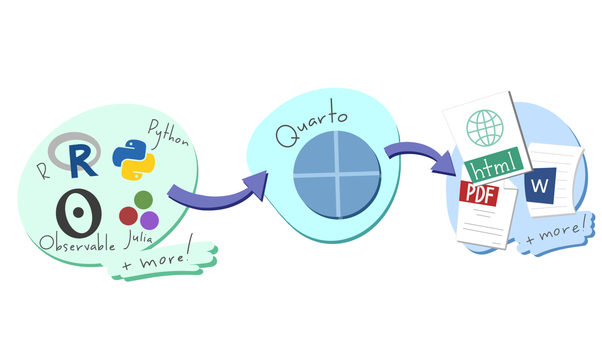
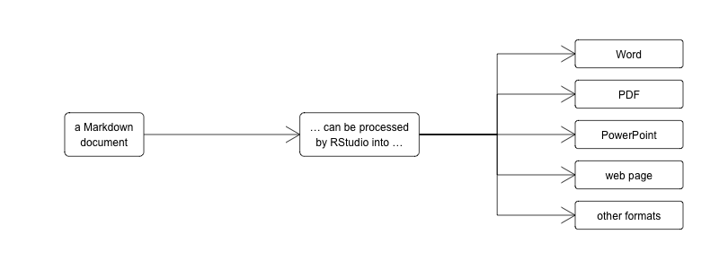
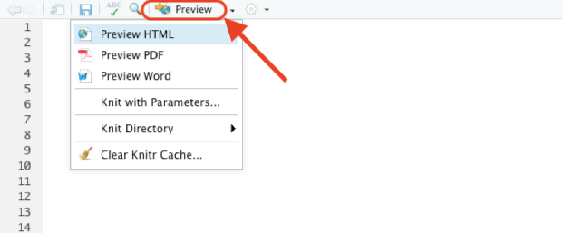
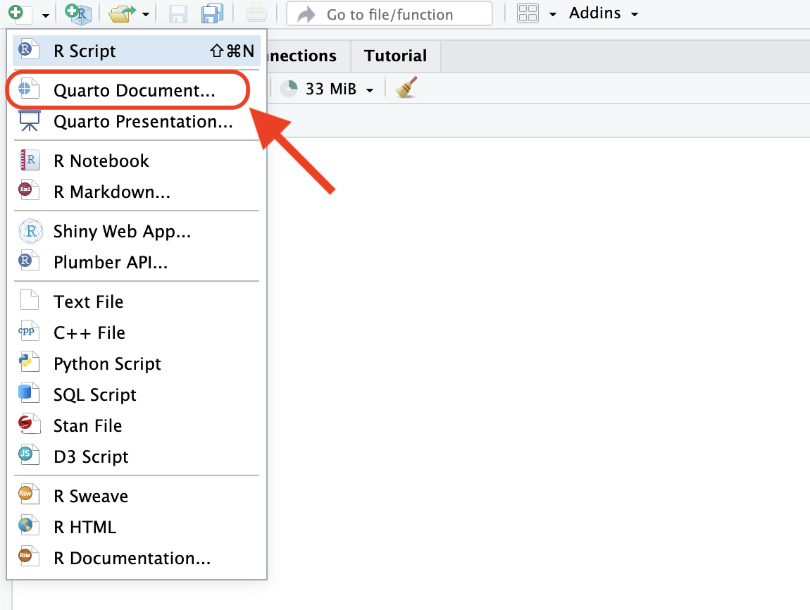
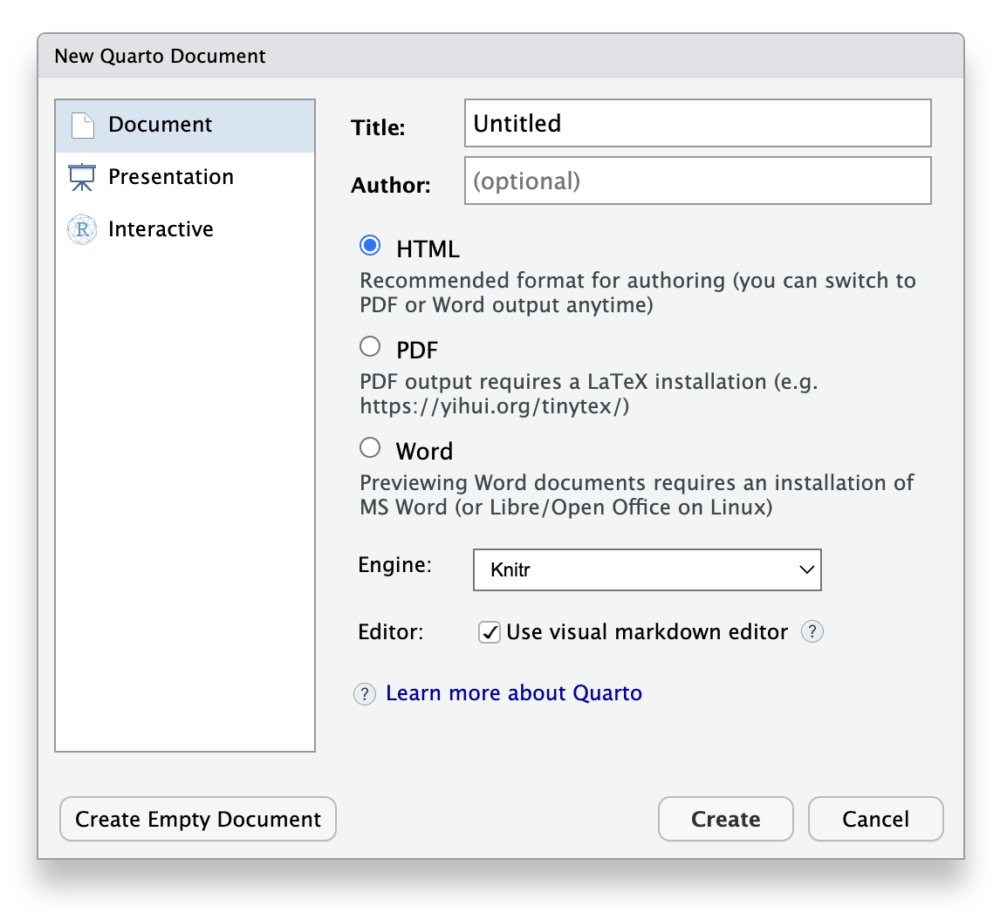
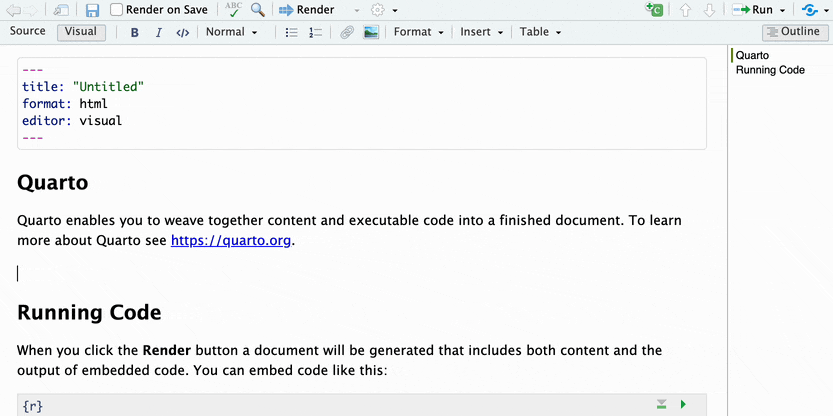
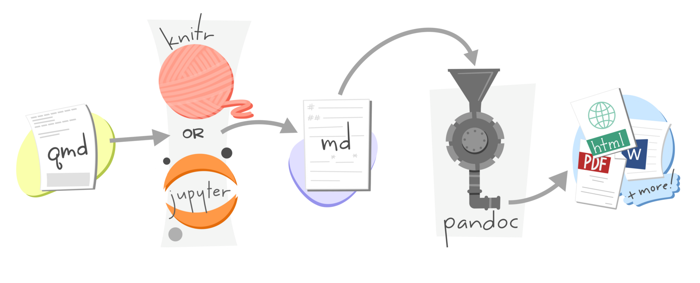

14 Writing reports in R
This chapter introduces teaches you how to integrate text, data, tables and charts in RStudio using Quarto. This allows us to create dynamic and reproducible documents that update automatically when data changes, eliminating the risk of errors from copying and pasting results into separate word processors. You will learn how to use Markdown to structure reports, embed R code for analysis, and produce outputs in multiple formats, including HTML, Word, and PDF. Mastering these skills ensures clarity, efficiency, and accuracy in crime analysis reporting, making research findings more transparent and reliable for decision-makers.
Open RStudio or – if you already have RStudio open – click Session then Restart R. Make sure you’re working inside the Crime Mapping RStudio project you created in Section 1.5, then you’re ready to start mapping.
14.1 Introduction
We already know how to produce useful maps in R so that people can use them to make decisions about understanding and responding to crime problems. But maps are only one part of most spatial analysis. In practice, maps are usually part of a larger report in which you as an analyst will explain what your maps show and perhaps make recommendations about what decisions people should make.
You are probably used to creating graphics in one piece of software (such as a map in R or a chart in Excel) and then importing or pasting those graphics into another program (such as Word) to including them in a written report. This way of working is often fine, but it has some important shortcomings. For example, if you want to make a change to a graphic (maybe to correct a typo), you then have to import it into your writing program again. More importantly, it can become hard to keep track of which version of a graphic you need to import and you may end up including the wrong version of a file.

The same problem applies to numbers that you might calculate in statistical software such as R. You might calculate a statistic such as the mean number of burglaries in local council wards, then paste the result into Word to include it in your report. But if you then realise later on that there is a problem with your data and re-run your code, it would be very easy (especially in a long report) to forget that you needed to update the mean value presented in the report. The risk of making errors like this is particularly high if you are asked to update an existing report based on new data. Perhaps the worst aspect of this problem is that you will never know for sure if the numbers in your final report are correct, unless you go back and check every one of them in whatever program you used to generate the numbers in the first place. So whenever you present your analysis you will have the nagging doubt that some of the results might be incorrect.
We can describe this risk of a report containing obsolete charts or incorrect statistics by saying that is is not reproducible – if we were asked to go back and demonstrate each stage in producing the report to prove that we had done everything correctly, it would be very hard to do so. This is important because the reports that analysts write about crime are so often used to make decisions about how to respond to crime. An error in copying and pasting a number from R or Excel into Word could lead to police officers being deployed to the wrong place, or the wrong local council being given funding to install crime-prevention measures.
Watch this video to learn more about writing reproducible documents with that is known as literate coding.
What is a key feature of a computational notebook?
Why is literate coding recommended for reproducible workflows?
Which of the following best describes Quarto notebooks?
In this chapter we will learn to use Quarto to write reports directly in RStudio, integrating data, maps and statistics directly into reports so that they are always up-to-date. Quarto can be used to produce detailed and polished reports in a way that makes sure they are always up to date. For example, the report Stop and Search in London was created entirely in Quarto.
14.2 Markdown
Markdown is a way of formatting plain text so that a computer can convert it into different file formats. For example, RStudio can convert Markdown documents into Word, PDF, PowerPoint and many other formats.

Markdown uses plain-text characters to represent formatting such as titles, italic text and so on. For example, the Markdown text:
produces the output:
Introduction
In this chapter we will learn to use a tool called Quarto to write reports directly in RStudio.
In this example, the character # followed by a space at the start of a line means that line should be shown as a first-level heading and the asterisks (* – we could also have used the underscore character _) around the word Quarto indicate that it should be emphasised (typically with italic text).
In Markdown we use the hash character # followed by a space to indicate that a line should be formatted as a top-level heading. The space after the # is important – if you write #Introduction instead of # Introduction then R will not recognise that line as representing a heading and it will not be formatted properly.
Markdown is designed to be easy to read and easy to write. It is perfectly possible, for example, to read the unformatted Markdown text in the example above. Since Markdown files (which have the file extension .md) are plain text, it’s also possible to open them on virtually any computer. Markdown is very widely used on the web – using underscores to mark out italic text and asterisks to mark out bold text even works in messaging apps such as Telegram and WhatsApp.
In Markdown you describe the structure of a document, not its appearance. The appearance of the document (which fonts it uses, what margins the pages have and so on) are determined by the templates that RStudio uses to convert markdown files into documents of different types. This can save you a lot of time, because you don’t need to specify fonts and other formatting. Instead, you can concentrate on the structure of your argument rather than the details of formatting.
You can create your own templates for documents (for example if you want to create documents that match a particular corporate style) but in this course we will use the templates built into RStudio, which are designed to create documents that communicate data effectively.
You should not try to fine-tune the visual appearance of a document produced from Markdown-formatted text by (for example) changing a second-level heading to a third-level heading because you want the heading text to be slightly smaller. Keeping the structure of your document (defined using Markdown) separate from its visual appearance has several benefits that are important, but not immediately obvious. For example, screen reading software used by blind or partially sighted people will read out the structure of a document rather than the visual appearance. So if, for example, you were to use Markdown syntax for code text to change the font in the headings in a Markdown document, it is possible that would make the document much harder for people using a screen reader to make sense of.
If you want to change the visual appearance of a piece of Markdown-formatted text, you should change the template that is used to convert that text into a Word document, PDF, web page, etc.
Use Markdown to describe the structure of a document, not its appearance.
14.2.1 Markdown document structure
To create paragraphs in Markdown, you simply split text with a blank line. So this Markdown text:
produces the output:
In this chapter we will learn to use a tool called Quarto to write reports directly in RStudio. Markdown is a way of formatting plain text so that a computer can convert it into different file formats.
because there is no blank line between the first and second sentences. We can split this into two paragraphs just by adding a blank line:
which produces the output:
In this chapter we will learn to use a tool called Quarto to write reports directly in RStudio.
Markdown is a way of formatting plain text so that a computer can convert it into different file formats.
Headings
There are six levels of headings available in Markdown documents, although it is very unlikely that you will need all six. Headings are specified by adding one or more # characters to the start of the line, followed by a space:
produces:
First-level heading
Second-level heading
Third-level heading
Headings should have at least one blank line above and below them, so that they stand out from the surrounding code. I usually leave three blank lines before a second-level heading and two blank lines before other headings, with exactly one blank line after every type of heading.
Lists
Markdown supports two types of list: ordered lists and unordered lists. You can make an ordered list by putting each list item on a new line and starting each line with a number followed by a full stop (.). You make an unordered list in the same way, but starting each line with an asterisk:
produces:
- A list of items
- for which the ordering
- of items is important
- A list of items
- for which the ordering
- of items is not important
Quotes
If you want to insert a quote into your Markdown document, you can do that by putting a greater-than (>) symbol followed by a space at the start of each line of the quote:
produces
In this chapter we will learn to use a tool called Quarto to write reports directly in RStudio.
14.2.2 Inline elements
As well as using Markdown to describe the structure of a document, you can use it to mark up particular text within a paragraph. We’ve already seen how to do this using _to emphasise text_ (usually displayed in italics). We can also **strongly emphasise** text, which will usually appear in bold. Note that the _, * or ** characters must be touching a word on exactly one side:
some _emphasised_ textproduces some emphasised textsome_emphasised_textdoes not produce emphasised textsome _ emphasised _ textdoes not produce emphasised text
We can add links to a document using the format [link text](URL). For example, the text:
produces the link:
There are several other Markdown codes for describing different elements within a document, including images, videos and segments of code. You can find out more about what’s possible with Markdown on the Markdown Basics page of the Quarto website.
14.2.3 Processing Markdown in RStudio
Once you’ve written a Markdown document, you can convert it into a web page, a Word document or a PDF file from within RStudio. To see how this works, in RStudio click File then New File then Markdown File and save the new file as chapter14.md. Note this file ends with .md rather than .R – that tells RStudio that the file is a Markdown document.
You should now see a new button at the top of the RStudio script panel marked Preview.

If you click on the small downward-pointing triangle next to that button, you have the option to produce your report in HTML (web page) format, PDF or Microsoft Word. HTML format is useful for creating documents to be published on the web, but also for quickly previewing documents in RStudio while you are working on them.
You do not need to have Microsoft Word installed on your computer to produce Word documents from Markdown files in RStudio, although you will need Word (or other word-processing software) to view the file after it is created.
To create PDF files from Markdown in RStudio, your computer has to have a version of software called TeX installed. If you’ve never heard of TeX, you can install it automatically using the tinytex R package. To install TeX, just run this R code once in the R Console:
TeX should now be installed on your computer. After you have restarted RStudio you will be able to create PDFs from within RStudio.
Note that you only have to install TeX once on each computer you use, so you should not include tinytex::install_tinytex() in any Quarto scripts that you write.
Which of the following is the correct way to create a first-level heading in Markdown?
How do you create an unordered list in Markdown?
What is the correct way to make strongly emphasise text in Markdown?
14.3 Quarto
Markdown allows you to create static documents in RStudio. We can add all types of R output – including maps, tables, charts and the results of calculations – to Markdown documents using Quarto, which is built into RStudio.
Quarto is a system that converts Markdown documents that contain chunks of code written in R or Python, runs the code and then integrates the Markdown text and the code results into one or more output files. Quarto can produce web pages, Word documents, PDF files, presentations, websites, e-books and other formats.
A Quarto file is just like a Markdown document except that it has the file extension .qmd rather than the extension .md. The .qmd extension tells RStudio that a file will contain a mixture of text formatted with Markdown and code that produces tables, charts and so on.
Since Quarto can produce many types of document, RStudio has a dialogue box in which you can select from all the installed Quarto templates. In RStudio, click File then New File then Quarto Document…

This will open a box containing all the Quarto templates that are installed on your computer. Some of these are installed by default and some may have been added by packages that you have installed.

You can edit Quarto documents in two ways in RStudio. When you create a new Quarto document, RStudio will open it in the Visual editor. This allows you to write the text content of your document as you would in word-processing software such as Word. For example, you can make text bold using buttons on the tool bar at the top of the document, or using standard keyboard short-cuts such as Ctrl+B on Windows or Command+B on Mac. There is also a Source editor, which allows you to edit the underlying Markdown formatted text directly.
In this chapter we will use the Visual editor, but you can choose to use the Source editor if you prefer. To switch between the two editors, slick the Source or Visual buttons at the left-hand end of the formatting tool bar at the top of the Quarto document window.
Whichever editor you use, Quarto documents start with a header that provides some basic information about the document, such as the title. A simple Quarto header looks like this:
The header is written in yet another programming language called YAML. You don’t need to know the details of YAML to write headers for Quarto documents. Two things you do need to know, though:
- The three dashes (
---) are important, because they tell RStudio that the content inside the dashes is the document header. The dashes must appear at the start of a line on their own. - Indentation matters in YAML. Every line takes the form
key: valueand in most cases the key must be at the very start of the line. Lines in YAML are not limited to 80 characters, so you should not break a single value (such as the document title) over multiple lines.
What is the key difference between a Markdown (.md) and a Quarto (.qmd) file?
What is the main role of the YAML header in a Quarto document?
What is one benefit of using Quarto over traditional word processors like Microsoft Word?
14.3.1 R code in Quarto
Quarto will process everything in an Quarto document after the header (marked with ---) as Markdown text. The only exception to this is when you include sections of code in an Quarto document.
You can include R code inside a line of Markdown text (known as inline code) and the result of that code will be included in the document output. To do this in the visual editor, you type a lower-case r followed by a space, then the code you want to run. You then select the text from the letter r to the end of the code, open the Format menu in the Quarto tool bar and select Code (alternatively you can select the text and use the keyboard short-cut Command+D on Mac or Ctrl+D on Windows).
For example, if you wanted to insert today’s date into a Quarto document, you can type:

Which would produce the output:
Quarto enables you to weave together content and executable code into a finished document. To learn more about Quarto see https://quarto.org.
This document was written on 5 August 2026
Putting R code inline is fine for simple pieces of code, but longer pieces of code included inline would become difficult to read (and therefore difficult to debug). Fortunately, we can put as much code as we like in a code block. To add a block of R code to an Quarto document, we open the Insert menu on the Quarto tool bar, click Code Chunk and then R. You will then see a grey box appear at the point in your document where you had placed the cursor, with the text {r} at the start of the box.
We can use code chunks to run longer pieces of code that would be difficult to read if the code were inline. For example, if you wanted to load a data file of crime data, filter it for crimes occurring in a particular month and then count the number of rows, you could do the calculation in a code chunk and then include the result inline:
---
title: "An example Quarto document"
format:
html:
embed-resources: true
editor: visual
---
```{r setup}
# Load packages
pacman::p_load(tidyverse)
# Load crime data
crimes <- read_csv("crime_data.csv")
```
```{r count-crimes}
# Count number of crimes in February 2021
crime_count <- crimes |>
filter(year == 2021, month == "February") |>
nrow()
```
There were `r scales::comma(crime_count)` crimes recorded in February 2021.Note that to make the Quarto document more readable, RStudio has given the R code chunk a grey background, in contrast to the white background of the rest of the document. If a code chunk does not have a grey background, this is a good sign that there is something wrong: maybe you haven’t saved the file with a .qmd file extension, or maybe you have not inserted the code block correctly.
Code chunks can also be used to insert tables and charts (including maps) into a Quarto document. To add a nicely formatted table of data, use the gt() function from the gt package. For example:
We can also use code chunks to produce graphics. In this case, you just include the code to produce your map or chart in a code chunk as you normally would.
To help keep track of code chunks, we can name them. To name a code chunk, put a single space after the letter r in the line that begins the chunk and then give the chunk name. Names can include letters, numbers and dashes (-). For example, if we wanted to call the chunk above count-all-crimes we would start the code chunk with the code {r count-all-crimes}.
The package that converts Quarto documents into other formats is called knitr – actually, it’s a bit more complicated than that, but one of the nice things about Quarto is you don’t need to worry about what’s happening behind the scenes.

The default Quarto template is set up so that the final document that is produced from your Quarto file will include both the code that you include in any code chunks and the output that the code produces. For example, this Quarto document:
---
title: "An example Quarto document"
format:
html:
embed-resources: true
editor: visual
---
```{r setup}
# Load packages
pacman::p_load(tidyverse)
# Load crime data
crimes <- read_csv("crime_data.csv")
```
```{r count-crimes}
# Count number of crimes in February 2021
crime_count <- crimes |>
filter(year == 2021, month == "February") |>
nrow()
```
There were `r scales::comma(crime_count)` crimes recorded in February 2021.Produces this output, which is probably not what you want:
We can control the results of code chunks using chunk options, sometimes called knitr options. We put these on the first line of each code chunk, with each option on a separate line and each line starting with the characters #| (referred to as a hash-pipe). Note that the #| must be followed by a space for Quarto to recognise it as a chunk option.
To specify that the code in our R code chunks should not be printed in the final document, we can set the chunk option #| echo: false. To specify that both the R code and the output produced by that code in each code chunk (e.g. and messages or warnings) should not be shown, we can set the chunk option #| include: false.
If we change the code in our previous example to include this line, the output becomes much more like the report we want:
---
title: "An example Quarto document"
format:
html:
embed-resources: true
editor: visual
---
```{r setup}
#| include: false
# Load packages
pacman::p_load(tidyverse)
# Load crime data
crimes <- read_csv("crime_data.csv")
```
```{r count-crimes}
#| echo: false
# Count number of crimes in February 2021
crime_count <- crimes |>
filter(year == 2021, month == "February") |>
nrow()
```
There were `r scales::comma(crime_count)` crimes recorded in February 2021.If a code chunk produces a chart or map then we do want to show the output (although not the code), so in that case we should not set #| include: false – we do not need to set #| include: true because it is the default.
Since we probably don’t want any chunks in our code to include the code in our final document, we could end up setting the chunk option #| echo: false for every code chunk. In a long or complicated document, this would get tedious. Fortunately, we can set chunk options globally (i.e. for all chunks in a document) by setting them in the YAML document header. To do this, we add a key called execute to the header. Instead of giving the execute key a value such as true or false, we instead indent the next line of the header by exactly two spaces and then set the chunk option echo: false. If we wanted to set multiple global chunk options here, we would put each one on a new line, all of the lines indented by two spaces from the start of each document.
Some of the R code we write produces messages or warnings that we will not want to include in our Quarto documents. For example, readers of a report based on crime data are unlikely to want to see the warning produced by the st_intersection() function, and will probably be quite surprised if this appears in their code. To hide these messages, we can split the code needed to produce a map into two code chunks: one to do the pre-processing that often creates messages or warnings, and a second chunk to create the map itself. Then we can use #| include: false to suppress any output from the first chunk.
---
title: "Medellin homicides map"
format:
html:
embed-resources: true
fig-cap-location: top
execute:
echo: false
---
```{r setup}
#| include: false
# Load packages
pacman::p_load(ggspatial, sf, sfhotspot, tidyverse)
# Load homicide data
medellin_homicides <- read_csv2("https://mpjashby.github.io/crimemappingdata/medellin_homicides.csv") |>
drop_na(longitud, latitud) |>
st_as_sf(coords = c("longitud", "latitud"), crs = "EPSG:4326")
# Load city boundary
medellin_boundary <- read_sf("https://mpjashby.github.io/crimemappingdata/medellin_comunas.gpkg") |>
janitor::clean_names() |>
st_transform("EPSG:3115")
```
```{r calculate_density}
#| include: false
# Calculate crime density
medellin_homicide_density <- medellin_homicides |>
st_transform("EPSG:3115") |>
hotspot_kde(bandwidth_adjust = 0.33, quiet = TRUE) |>
# The next line would produce a message if we hadn't used the chunk option
# `#| include: false`
st_intersection(medellin_boundary)
```
@fig-homicides shows the density of homicides in Medellin, Colombia, from 2010 to 2019.
```{r}
#| label: fig-homicides
#| fig-cap: "Density of homicides in Medellin, 2010 to 2019"
# Note we don't have to set `#| include: true` for this code chunk, because that
# is the default
# Plot a basic density map
ggplot() +
annotation_map_tile(type = "cartolight", zoomin = 0, progress = "none") +
geom_sf(
aes(fill = kde),
data = medellin_homicide_density,
alpha = 0.7,
colour = NA
) +
scale_fill_distiller(direction = 1) +
labs(
caption = "Homicide data: Alcaldía de Medellin (CC-BY-SA)",
fill = "homicide\ndensity"
) +
theme_void()
```#| include: false may suppress important warnings
Using #| include: false can be useful to stop an output document being littered with R messages and warnings. However, it will also stop you seeing warnings that might be important in highlighting problems you need to fix. If code in a Quarto code chunk is not producing the results you expect, the first thing you should do is remove #| include: false from the chunk so that you can see any warnings or messages that you might need to act upon. Once the code is running as you want it to, you can add #| include: false back again.
14.3.2 Maps, charts and tables in Quarto documents
Almost all the documents you produce in Quarto will include one or more maps, charts or tables. Quarto includes tools for providing captions for figures and tables, as well as the ability to refer to them elsewhere in a document.
Maps, charts and tables in Quarto documents are usually the output produced by a chunk of R code. For example, we might use a ggplot() stack to make a map. To turn a code chunk into a figure we can reference, we need to add two chunk options at the start of the code chunk. We use the #| label chunk option to specify what text we will use throughout the rest of the document to refer to the figure or table produced by that code chunk. Note that labels must begin with fig- for figures (charts and maps) or tbl- for tables. For example, we might label a map with the label #| label: fig-homicides-map or a table with the label #| label: tbl-robbery-counts. Note that chunk labels can contain letters, numbers and dashes (-), but not spaces or other characters.
The second chunk option we should add is either the #| fig-cap chunk option (for charts and maps) or the #| tbl-cap argument, to create a caption for the chart, map or table. Note that captions should be enclosed in quotes, e.g. #| tbl-cap: "This is the table caption".
Once we have set the label and the caption for a code chunk, we can use that label to insert cross-references into our document. For example, in the code above you can see that the code chunk that creates the map of homicides in Medellin has the chunk option #| label: fig-homicides. Just above that code chunk, the figure produced by that chunk is referenced in the text using the code @fig-homicides. You can see in the output below that the cross-reference @fig-homicides has been changed to the text ‘Figure 1’, that the cross-reference is a hyperlink (to the part of the document containing the map) and that the map now has a caption that starts ‘Figure 1’.
What happens if you set the option #| echo: false in a Quarto code chunk?
Why is it useful to name code chunks in Quarto?
What happens if you set the option #| include: false in a Quarto code chunk?
14.4 Rendering Quarto
Once you’ve written the text for your document and added the code needed to produce statistics, tables and figures, it’s time to convert your Quarto file to a document in the format you need. This process is called rendering (or sometimes knitting) the document.
<img src=“../images/knitting_hedgehog.png” alt=“A round hedgehog in a yellow beanie, knitting a teal scarf. Behind them are different outputs from”knitting” documents in R, including PDF, Word, LaTeX, html5, slides, eBooks, dashboards, and websites.”>
In RStudio you can render a Quarto document by clicking the Render button (if you can’t see the Render button at the top of your Quarto document, that is a sign you haven’t saved the file as a .qmd file). By default, RStudio will produce an HTML file (a web page) and open it in the HTML viewer built into RStudio. You can produce other formats instead of a web page by clicking on the downward-pointing arrow next to the Render button and then choosing the format you want.
You can control the output format that RStudio will produce by changing the format: value in the YAML header of your Quarto document. The default is format: html, but you can also use format: pdf to produce a PDF file, format: docx to produce a Word document, format: epub to produce an e-book, format: pptx to produce a PowerPoint presentation. There are many other ouput formats available.
If you have a choice of which format to produce a report in, I would suggest you choose HTML because it can do things (like include interactive maps made with leaflet) that Word and PDF format cannot, and can easily be read on mobile devices. Well-formatted HTML documents are also much more accessible to people who need assistive technology such as screen readers for blind and partially sighted people. If, for whatever reason, you cannot choose HTML, I recommend choosing PDF format since it is readable on almost all computers, even those that do not have Word installed on them. Only produce reports in Word format if you are specifically required to submit something in that format.
Whatever format you choose, the output file will be saved in the same folder on your computer that you saved your .qmd file in, and will have the same file name but with a different file extension (.html, .pdf, .docx, etc.). If you render the document again, RStudio will overwrite the previous output file.
When you render a Quarto document, RStudio will run all the code in the file so that it can knit the results together with the document text. This is similar to running the code in a .R file using the Source button, except that when RStudio runs the code in a Quarto document, RStudio can only access functions from the packages that are loaded in the Quarto document itself, and only make use of objects created inside the Quarto document. This means that nothing you do in the console or in any other files you have open in RStudio (e.g. loading a package or creating an object) affects the results that will be produced when you render a Quarto document. This will probably be frustrating at first, but it helps enormously in keeping your code organised and in making it reproducible.
Since rendering a Quarto document involves running all the code contained in it, it is possible that the code will cause errors at the time when the Quarto document is rendered. When this happens, the R error message will appear in the RStudio Render panel. When you run a .R file that produces an error, the error message typically tells you which line of code the error occurred on. But when an error occurs while rendering a Quarto file, the error message only specifies the first and last lines of the part of the document in which the error occurred. If the error occurred inside a code chunk, the error message will refer to the first and last lines of that chunk, but the error itself could have occurred anywhere inside that chunk. If the error occurs outside a code chunk, the error message will report that the error occurred somewhere between the last line of the previous code chunk and the first line of the next code chunk. It is up to you to find the exact location of the error.
14.4.1 Making self-contained HTML documents
Web pages written in HTML typically make use of images, videos and other resources stored in separate files. In fact, the web page you’re reading now makes use of resources stored in 51 separate files. This works well on the web, since it allows resources to be shared between lots of HTML files, which reduces how much data has to be stored and transmitted across networks. But it works less well when you want to send an HTML report to someone else over email, since it can be hard to keep track of all the external files associated with a particular HTML file.
To deal with this problem, we can tell Quarto that when it creates an HTML report, all the necessary data and other resources should be embedded inside the HTML file itself. This makes the HTML file larger, but easier to manage. To make HTML reports produced by Quarto self-contained in this way, we can change the format section of the header of a Quarto document from simply format: html to instead specify exactly what settings we want to be used to create that HTML file:
There are lots of other ways we can use the format section of the header in a Quarto document to fine-tune how the resulting document works. You can find out more in the HTML section of the Quarto website.
14.5 In summary
In this chapter we have learned how to use Markdown to create structured text using simple formatting codes and how to integrate that text with our code to produce integrated reports that include the results of our analysis. This means we can make our work reproducible so that we can avoid all the mistakes that can happen if we have to copy and paste statistics and graphics into reports written in software like Word.
It also means we can produce periodic reports with updated data very easily, since we can just choose the data we want the report to be based on using filter() at the start of our file and render the document. This can save a huge amount of time in producing reports such as performance bulletins or monthly summaries of crime in an area.
To get used to working with Quarto files, download this example report to your computer and open it in RStudio. Now make the following changes:
- Change the global chunk options so that the code used in each code chunk is not shown in the final document.
- Render the file into documents of at least two different formats (e.g. HTML and Word). If you have installed
tinytexon your computer so that you can create PDF documents, look at how different the document appears in PDF format compared to HTML format because of the different templates used.
There is a lot more you can do with Quarto. To find out more, refer to these resources.
Answer these questions to check you have understood the main points covered in this chapter. Write between 50 and 100 words to answer each question.
- Why is reproducibility important in writing reports, and why does non-reproducible analysis risk providing decision makers with the wrong information?
- How does Markdown help structure a report, and what are some key Markdown formatting features?
- What role does the YAML header play in a Quarto document, and how can it be customized?
- What are chunk options in Quarto, and how do they affect the final output of a report?
- How does Quarto improve the workflow of integrating tables, charts, and maps into reports?